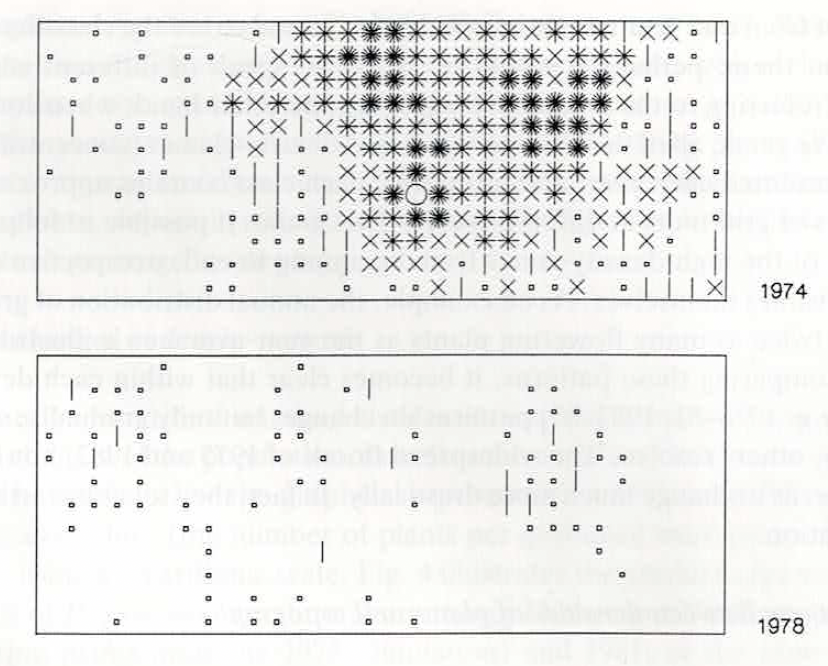

Código
library(Rcompadre) # Paquete para trabajar con la base de datos de COMPADRE y COMADRE
library(tidyverse) # Paquete para activar múltiples paquetes
library(gt) # Paquete para formatear tablas
library(kableExtra) # Paquete para formatear tablasLa historia de la dinámica poblacional proporciona el contexto conceptual necesario para comprender el desarrollo de los modelos y enfoques utilizados actualmente. Este capítulo presenta una síntesis histórica de las ideas, métodos y figuras clave que han dado forma al estudio moderno de la dinámica poblacional.
Por: Raymond L. Tremblay
El estudio de la dinámica poblacional ha evolucionado a lo largo del tiempo como respuesta a preguntas fundamentales sobre crecimiento, regulación y persistencia de las poblaciones. Desde los primeros modelos de crecimiento exponencial y logístico hasta el desarrollo de modelos estructurados por estadios, la historia de esta disciplina refleja una integración progresiva entre teoría matemática, observaciones empíricas y necesidades aplicadas.
En este capítulo se revisan los principales hitos históricos que han contribuido a la formulación de los modelos poblacionales contemporáneos, destacando cómo avances conceptuales y metodológicos permitieron pasar de descripciones simplificadas a representaciones explícitas del ciclo de vida. Se analizan las contribuciones tempranas al entendimiento del crecimiento poblacional, así como el surgimiento de enfoques matriciales que incorporan estructura demográfica y procesos vitales diferenciados.
A diferencia de los capítulos técnicos del libro, este capítulo se centra en el desarrollo histórico de las ideas que sustentan la dinámica poblacional moderna. Comprender este contexto histórico permite interpretar mejor los supuestos, alcances y limitaciones de los modelos actuales, y proporciona una perspectiva crítica sobre cómo y por qué se han adoptado determinadas herramientas analíticas en ecología y biología de la conservación.
A continuación se presentan algunos de los eventos, autores y desarrollos clave que marcaron la evolución de la dinámica poblacional. El desarrollo de los modelos matriciales, discutidos en los capítulos sobre transiciones demográficas y matrices U, F y C, representa un punto de inflexión clave en esta historia.
library(Rcompadre) # Paquete para trabajar con la base de datos de COMPADRE y COMADRE
library(tidyverse) # Paquete para activar múltiples paquetes
library(gt) # Paquete para formatear tablas
library(kableExtra) # Paquete para formatear tablasLa cantidad de estudios de demográficos usando PPM es bastante impresionante y incluye al momento de la publicación del libro 138 familias de plantas y 509 géneros y 792 especies en la base de datos de COMPADRE (octubre 3, 2024). La familia Orquidaceae (>46 especie) se encuentra en una de las familias donde hay más especies que han sido evaluado, después de Asteraceae (>65 especie) y Leguminaceae (> 55 especies), pero la gran mayoría de las familias tienen de 3 (mediana) o menos especies evaluada. En la tabla del Apéndice A @ref(lista_3a) se presentan los estudios de dinámica poblacional en orquídeas que usaron PPM y que están incluido en la base de COMPADRE. Se incluye en la table algunas de las preguntas o conceptos principales que los autores evaluaron. En la gran mayoría de los trabajos se considera múltiples hipótesis/ideas sobre la dinámica poblacional de las orquídeas. Para información específica sobre la metodología usada en cada estudio se recomienda revisar los trabajos originales.
En esta sección se hará una revisión breve de los primeros estudios de dinámica poblacional en orquídeas que usaron PPM. Se presentarán algunos de estudios en orden cronológico y se resumirán las preguntas principales que los autores intentaron responder. Antes de los estudios mencionado abajo, Carl Olaf Tamm (Tamm, 1948) publicó un artículo en 1948 sobre la dinámica poblacional de Orchis mascula y Orchis sambucina en Suecia. Estos trabajos fueron antes del desarrollo de la metodologías mencionado en este libros. Vea el capítulo siguiente para cocer un poco sobre los trabajos de Tamm \ref{sec:OTamm}.
Uno de los primeros esfuerzos de integrar y unir estudios de demografía en orquídeas fue el libro Population Ecology of Terrestrial Orchids editado por Wells y Willems (Wells & Willems, 1991). Ese libro es el resultado de una reunión de especialistas en orquídeas en 1990 en South Limburg, Holanda. En el libro se presentan estudios de demografía de orquídeas de diferentes partes de Europa, Norte América y Australia y se discuten los métodos y resultados de los estudios. Los temas principales de los artículos incluye la dinámica de poblaciones y el manejo, la dinámica de producción de flores y frutos, la fenología del crecimiento y la partición de recursos a las diferentes partes de la planta y la dinámica de población usando matrices. En esta ultima sección Katherine Gregg presenta la variación en la dinámica de cuatro poblaciones de Cleistes divaricata (Gregg, 1991) distribuido entre West Virginia, Florida y North Carolina, USA. En ese trabajo se enseña claramente el problema de estimar latencia (dormancy) y la variación entre población de los parámetros del ciclo de vida. La latencia es un tema recurrente en los estudios de orquídeas y en general en estudios de demografía de plantas perennes. En el trabajo de Waite y Hutchings presentan sus estudios de Ophrys sphegodes donde evalúan el impacto de herbivoría por vacas y ovejas del ambiente rodeando la orquídea en la dinámica de la población (Waite & Hutchings, 1991). Los autores señala que es importante tomar en cuanta el momento donde ocurre la herbivoría, ya que impacta el crecimiento de la O. sphegodes de forma diferencial. En adición demuestra que las plantas competidores a la orquídea, también consumido por vacas no es suficiente para reducir la competencia entre especies de plantas y reduce la viabilidad de la orquídea al comparar con herbivoría por oveja. El libro es una buena introducción a los estudios de demografía de orquídeas y a los problemas que se enfrentan en esos estudios.
En una reunión posterior a la de Holanda, hubo otra en Ceske Budejocive, República Checa en 2001 que también resulto en un libro editado por Kindlmann, Willems and Whigham (Kindlmann, 2002). El libro esta dividido en cuatro secciones, la demográfica y dinámica de poblaciones, la biología de florecer y producción de frutos, miccoriza y germinación de semillas y el manejo y conservación. Solamente un trabajo usa PPM para los análisis evaluando la dinámica de Orchis usulata en Estonia por Kadri Tali (Tali, 2002). Los otros trabajos en este libro no usaron PPM pero se observa múltiples avances en conceptos y metodología para ampliar el estudio de la dinámica poblacional de orquídeas, específicamente la importancia de la micorriza en la germinación de semillas.
Estos dos libros se enfocan en especies terrestres y ninguno tiene ejemplos de especies tropicales y epífitas. El primer trabajo con especies epifitas es de (Hernández-Apolinar, 1992) con Laelia speciosa evaluando el impacto de cosecha sobre el potencial de supervivencia. En este trabajo de tesis de pre-grado se evalúa el impacto de la cosecha de flores en la dinámica de la población de L. speciosa en México. El interés de Mariana Hernández era evaluar el impacto de la remoción de flores sobre la supervivencia de la poblaciones. Hasta el momento no hay un libro o un conjunto de publicaciones en el mismo volumen que es similar a los dos libros mencionados anteriormente que se enfoque en orquídeas epifitas o tropicales.
El problema de latencia y estimar los parámetros relevante a esa etapa del ciclo de vida de la matriz de transición es un tema recurrente en los estudios de orquídeas terrestres. No es claro si la latencia es algo común en la mayoría de las orquídeas terrestres o si es un componente de la historia de vida que esta mayormente limitado a cierta área geográfica o grupos taxonómicos. De los xx estudios de orquídeas terrestre que usaron PPM, xx mencionan el problema de latencia en la estimación de los parámetros y xx son estudios dedicados exclusivamente a estimar latencia o considerar métodos alternos para calcular los parámetros relevante a esta etapa de vida. ¿Por que es tan importante estimar la etapa de latencia? La dificultad es realmente determinar la supervivencia de los individuos, si los individuos pueden estar latentes por varios años, entonces la supervivencia de los individuos no es observada y por lo tanto no se puede estimar. Un individuo que no emerge en un año puede ser un individuo que ha muerto o un individuo que esta latente. Por consecuencia considerar un individuo muerto cuando es latente tiene impacto sobre la estimación de la supervivencia de los individuos. En los estudios evolutivos la falta de considerar esa etapa correctamente pudiese sesgar los estimados de esfuerzo reproductivo.
Uno de los científicos que ha dedicado mucho de su carrera en considerar la latencia es Richard P. Shefferson que ha desarrollado múltiples métodos para incluir la latencia en la dinámica de las especies Shefferson, Mizuta & Hutchings (2017). Shefferson ha demostrado que hay un costo a la latencia (Shefferson et al., 2012) y que individuos que son latente múltiples años tienen una probabilidad de sobrevivir menor que individuos que no son latentes.
Marc Kéry y Katherine Gregg (Kéry & Gregg, 2004) presentan un método probabilístico para estimar la latencia y la suypervivencia en orquídeas terrestres dentro de un contexto de precencia y aucencia de los individuos aplicando el modelo de Cormack-Jolly-Seber (Lebreton et al., 1992). Detectaron episodios de latencia de 1 a 4 años en Cypripedium reginae y entre 2% a 12% de los ramets eran latente en las poblaciones y que la supervivencia aunque era similar entre años varia más en una de las población.
Tremblay et al. (Tremblay et al., 2009) evaluaron la latencia en 9 especies de Caladenia con diferentes cantidad de individuos muestreados y años de datos usando un acercamiento bayesiano. Encontraron que la latencia en el genero Caladenia se modela mejor cuando se asume que cada especies tiene su propria supervivencia y probabilidad de emerger entre años. Uno habría asumido que como todas las especies son del mismo genero, la latencia seria más similar entre especies. Pero los autores encontraron que la latencia varia entre especies. Claramente si esto se confirma en otros géneros de orquídeas, la latencia es un problema que se tiene que considerar individualmente por cada especie y que especies del mismo genero no necesariamente se comportan de forma igual. La ventaja de usar un acercamiento bayesiano es que se puede estimar la latencia y la supervivencia de múltiples especies simultáneamente aprovechando de la información de todas las especies para estimar los parámetros y comparar varias modelos. En muchas ocasiones los estudios de orquídeas se enfocan en una sola especie y no se considera la variación entre especies ademas el tamaño de muestra de una especie en particular puede ser limitado y no se puede estimar la latencia de forma confiable con métodos tradicional.
Los primeros trabajos de dinámica poblacional usando PPM fueron publicado en revista revisado por pares o en libros o tesis se enfocaron en orquídeas comienzan en los años 1990. La lista de trabajos de orquídeas que usaron PPM incluye:
Es interesante que en estos primeros años hay 3 trabajos con especies tropicales de las 8 trabajos realizados. Interesantemente hoy hay más estudios de PPM en orquídeas tropicales (n= 35) que de especies de templadas (n= 31).
La cantidad de publicaciones por autores varia mucho con la mayoría de los autores con solamente un articulo (tesis o capítulo) usando PPM con orquídeas. Los autores con más de un articulo incluye a Tremblay, Raventos, Shefferson, González-Hernández, Gregg y Hutchings entre otros (en orden de frecuencia). Es importante notar muchos de los siguientes autores pueden haber publicado más trabajos con orquídeas pero no usaron PPM (estos no están contabilizados).
Publicaciones de dinámica poblacionales sin el uso de PPM son múltiples y deberían ser considerados en una revisión mas amplia de la literatura. Esos trabajos traen una perspectiva variada y muchas veces innovadoras para tratar de entender los cambios en la cantidad de individuos en tiempos. Aquí veremos algunos de estos estudios que no usaron PPM. Una lista parcial se encuentra en al Appendice A @ref{sec:lista_3a}.
Leo E.M. Vanhecke (Vanhecke, 1991) demuestra el cambio en de densidad en el tiempo y espacio en la especies Dactylorhiza praetermissa entre 1974 y 1985. Aquí vemos dos de estos gráficos para visualizar el cambio en la densidad de la población. En el primer gráfico se observa que la densidad de la población es mayor en el año 1974 y en el segundo gráfico se observa que la densidad de la población es mayor en el año 1978. Es claro que pocos años la densidad de plantas emergente en una parcela puede cambiar mucho. En el trabajo el demuestra el cambio en densidad en los siguientes años, 1974, 1978-1985.


Willems y Bik (Willems & Bik, 1991) siguieron una población de Orchis simia por 22 años, desde 1968 a 1990, y contabilizan la cantidad de individuos en cada estado de desarrollo, categorizando estos como nuevas plantas, plantas fallecidas, con flores, latentes y la cantidad de plantas totales. Presentan una figura demostrando la cantidad de individuos en cada estado de desarrollo en el tiempo y estimando la cantidad de individuos faltantes y muertos.
Haciendo una busqueda en Google Scholar para [“orchid “population dynamics”” ], se encontró un total de 3,510 artículos. La mayoría de los artículos son revisiones o estudios que no usan PPM. Miramos los primeros artículos encontrado
1940-1950
1950-1960 - ninguno
1960-1970 - ninguno
1970-1980
Margaret Bradshaw (Bradshaw & Doody, 1978) hace un resumen de los valores de estudios de demografía incluyendo orquídeas y menciona los trabajos de Tamm Tamm (1972).
Carl Olaf Tamm (Tamm, 1972) revistió sus análisis de dinámica poblacional de Dactylorhiza sambucina, D. incarnata, Orchis mascula y Listera ovata. Estos muestreos fueron comenzando en en los años 1940, y publicado por la primera vez en 1948 (Tamm, 1948).
1980-1990
Loyal A. Mehrhoff (Mehrhoff, 1989) evaluó la dinámica de Isotria medeoloides en cinco poblaciones en Georgia (n=2), North Carolina (n=2), y South Carolina (n=1), El siguió las poblaciones por seis años consecutivos. El autor encontró que la supervivencia de las plantas varia entre poblaciones y que la supervivencia de las plantas en la poblaciones no tienden a persistir. Tres de las cinco poblaciones había desaparecido o reducido dramáticamente en el periodo de seis años.
Clare Alexander (Alexander & Alexander, 1984) comparó el patrón de fenología de número de rosetta y supervivencia en Goodyera repens en tres poblaciones en Inglaterra en dos años. Los autores evaluaron la longevidad de las rosettas de los individuos y estimaron que el promedio es de 4.3 ± 1.1 años. En adición encontraron que la supervivencia de las rosettas varia basado en la densidad, y que mayor la densidad menor la longevidad de estos individuos. Este trabajo pudiese ser el primero que apoya la idea que la densidad en orquídea influencia la supervivencia de los individuos.
Micheal J. Hutchings (Hutchings, 1987) evaluó el efecto del tiempo desde la primera vez que una planta emerge y su probabilidad de florecer en Orphys sphegodes en Inglaterra. Demostró que las plantas con mayor edad (tiempo de primera avistamiento) florecen más y se acerca 100% cuando no son latente. Al contrario parece que las plantas de mayor edades (8 años o más) demuestra una reducción en sus la altura de la inflorescencia, número de hojas y cantidades de flores, apoyando la idea de senescencia. En adición demostró que las plantas que son más robusta en termino de un mayor promedio de flores por año están correlacionado con el largo de vida (lifespan).
Katherine Gregg (Gregg, 1989) estudió la dinámica poblacional de Cleistes divaricata en tres poblaciones en el este de los Estados Unidos. En este trabajo se presenta una revisión de la literatura sobre la dinámica poblacional de orquídeas y se discuten los métodos usados para estimar la dinámica poblacional. Se presenta un análisis de la dinámica poblacional usando PPM y se discute el impacto de la latencia en la estimación de los parámetros demográficos.
Ricardo Calvo and Carol C. Horvitz (Calvo & Horvitz, 1990) estudian la dinámica poblacional de Tolumnia variegata en Puerto Rico. Se presenta un análisis de la dinámica poblacional usando PPM y se discute el impacto de la variación en transiciones sobre la adecuación demográfica, especificamente sobre el efecto de limitaciones de polinizadores sobre la producciones de frutos.
La base de datos de COMPADRE contiene múltiples estudios de dinámica poblacional en orquídeas y es una buena fuente de información para estudiar la dinámica poblacional de orquídeas.
compadre <- cdb_fetch("compadre") # Usar este código para bajar los datos del repositorio de COMPADRE. Tiene que haber activado la librería de Rcompadre.Cantidad de Familias de plantas en la base de datos de COMPADRE
Familia=(as.data.frame(sort(unique(compadre$Family))))
count(Familia)La cantidad de géneros en la base de datos de COMPADRE
Genera=(as.data.frame(sort(unique(compadre$Genus))))
count(Genera)La cantidad de especies en la base de datos de COMPADRE
Especies=as.data.frame(sort(unique(compadre$SpeciesAccepted)))
count(Especies)Aqui enseñamos como filtrar la base de datos de COMPADRE para obtener solamente las especies de la familia Orchidaceae. En este caso se usa el paquete dplyr para filtrar y contar las especies unicas de orquídeas.
Lista_Orquidea=compadre %>% filter(Family %in% c("Orchidaceae"))
Lista_O=as.data.frame(sort(unique(Lista_Orquidea$SpeciesAccepted)))
count(Lista_O)SPECIES_Number=Lista_Orquidea%>% select(Family, StudyStart, StudyEnd, SpeciesAccepted, YearPublication, Authors, DOI_ISBN, OrganismType, MatrixPopulation, mat) %>%
group_by(Family) %>%
summarize(n_species = length(unique(SpeciesAccepted))) %>%
arrange(desc(n_species))
summary(SPECIES_Number)Revisión:
RLT: Oct 1, 2024